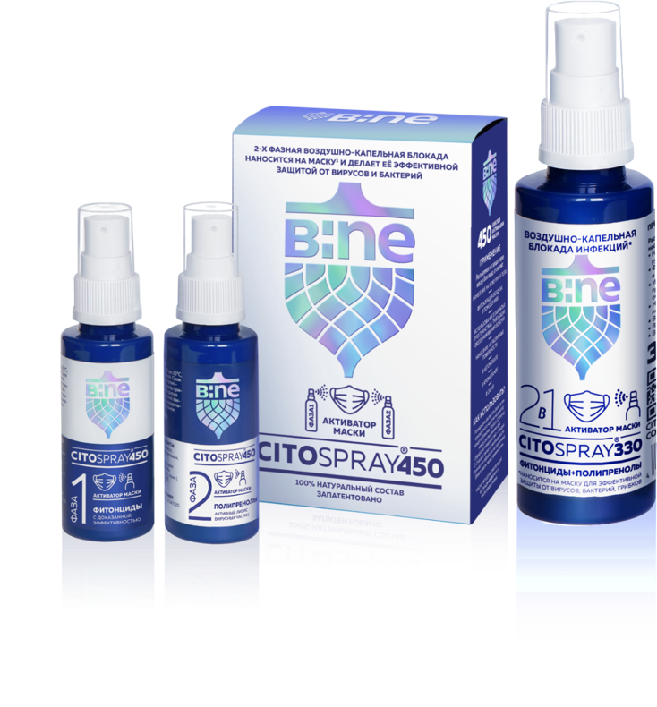

- Воздушно-капельная блокада инфекций;
- Дезинфектор для органов слизистых;
- Защита от инфицирования;
- Профилактика инфекционных заболеваний;
- Лечение простудных заболеваний;
- Защита от осложнений;
- Облегчение симптомов;
- Снижение симптомов аллергии и облегчение дыхания для астматиков;
- Обеззараживание легких;
- Инактивация коронавируса;
- Развитие местного иммунитета;
- Обеззараживание вдыхаемого воздуха;
- 100% натуральный состав
(эвкалипт, зверобой, чистотел, полынь, пихта, сосна, полипренолы); - Угнетение бактерий;
- Терапия острых респираторных инфекций;
- Снижение рисков заболевания;
- Натуральный дезинфектор;
- Анти Акне для кожи, снятие раздражения на коже.


- Воздушно-капельная блокада инфекций;
- Дезинфектор для органов слизистых;
- Защита от инфицирования;
- Профилактика инфекционных заболеваний;
- Лечение простудных заболеваний;
- Защита от осложнений;
- Облегчение симптомов;
- Обеззараживание легких;
- Инактивация коронавируса;
- Укрепление местного иммунитета;
- Обеззараживание вдыхаемого воздуха;
- 100% натуральный состав
(эвкалипт, зверобой, чистотел, полынь,
пихта, сосна, полипренолы); - Угнетение бактерий;
- Терапия острых респираторных инфекций;
- Снижение рисков заболевания;
- Натуральный дезинфектор;
- Анти Акне для кожи, снятие раздражения на коже;
- Снижение симптомов аллергии и облегчение дыхания
для астматиков.